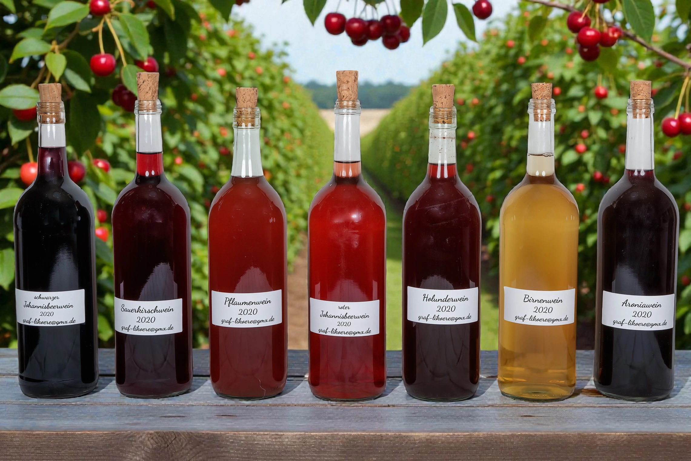
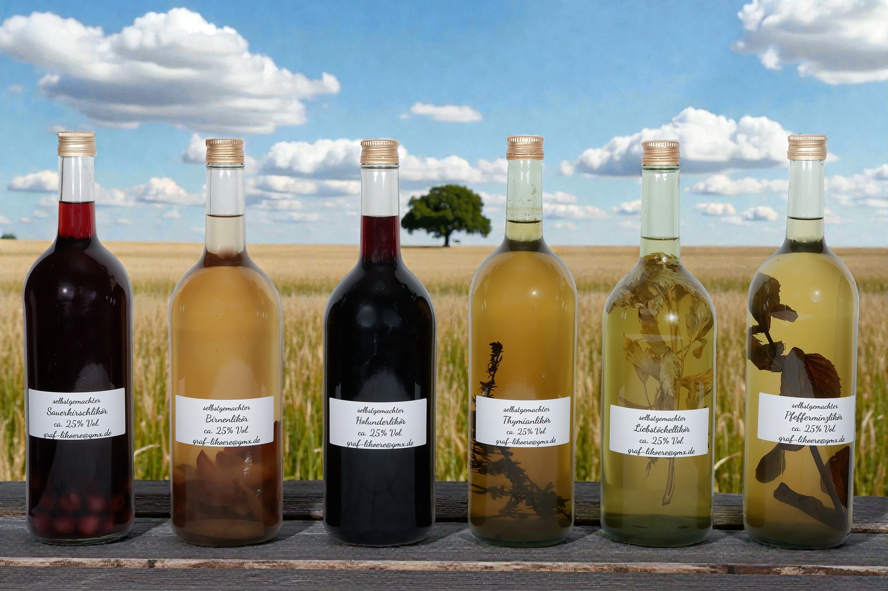
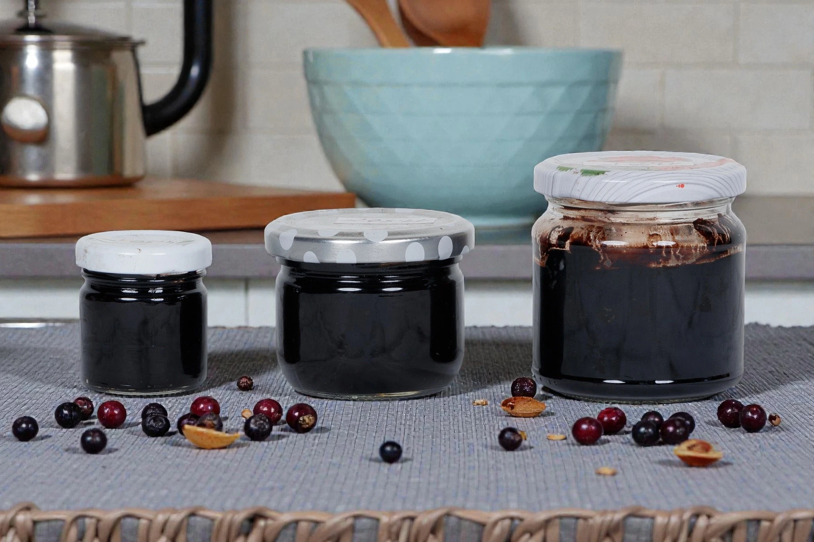

Fruchtweine und Liköre
Holunder-, Birnen- und Sauerkirschlikör sowie Pfefferminz-, Thymian- und Liebstöckellikör gehören zum beschriebenen Sortiment. Auch weitere Zutaten wie Pfirsich oder Petersilie sind möglich.
Handwerkliche Herstellung aus Frucht, Wein und Kräutern
Diese Infoseite bündelt Erfahrungen, Herstellungsweisen und Hintergründe rund um Liköre, Fruchtweine und bewährte Ansätze aus der eigenen Praxis.

Sortiment

Holunder-, Birnen- und Sauerkirschlikör sowie Pfefferminz-, Thymian- und Liebstöckellikör gehören zum beschriebenen Sortiment. Auch weitere Zutaten wie Pfirsich oder Petersilie sind möglich.

Fliederkreude ist ein altes pommersches Gewürz aus Holunderbeeren. Es passt klassisch zu Karpfen, aber auch zu Soßen, Rotkohl, süßsauren Eiern, Salatdressings oder pur.
Die Sauerkirschbowle wird aus TK-Kirschen, Zucker und eigenem Sauerkirschwein hergestellt. Sie reift in der kalten Jahreszeit im Freien und wird anschließend vakuumiert und eingefroren.
Ablauf
Ein persönlicher Einstieg mit vorläufigen Lebensstationen, die später individuell angepasst werden können.
Die konkrete Arbeitsweise vom Ernten und Ansetzen bis zur Reifezeit und Messung.
Überblick über Fruchtweine, Liköre, Kräuteransätze und besondere Spezialitäten.
Praktische Tipps, kleine Kontrollen und Erfahrungswerte aus der Herstellung.
Mein Leben
Der Weg zur eigenen Wein- und Likörherstellung beginnt oft nicht mit einem fertigen Rezept, sondern mit Neugier, Geduld und dem Wunsch, Früchte aus der Umgebung sinnvoll zu verarbeiten.
Als vorläufige Lebensstationen können hier später persönliche Abschnitte ergänzt werden: erste Erfahrungen mit Obst und Garten, Begegnungen mit alten Familienrezepten, das Sammeln regionaler Früchte, die ersten Ansätze im Weinballon und die Entwicklung eigener Sorten.
Mit den Jahren entsteht daraus eine eigene Handschrift. Jede Ernte, jeder Ansatz und jede Verkostung erweitert das Wissen darüber, wie Frucht, Zucker, Alkohol, Zeit und Sorgfalt zusammenwirken.
Herstellung
Ich stelle selbst Liköre her.
Dazu verwende ich Primasprit mit einem Alkoholgehalt von ca. 96 % Vol.
Meine Liköre umfassen Holunder-, Birnen- und Sauerkirschlikör sowie Pfefferminz-, Thymian- und Liebstöckellikör.
Checkliste.pdf HerunterladenDie Weine
Holunder liefert eine kräftige, dunkle Fruchtnote. Als Wein dient er als Grundlage für einen aromatischen Liköransatz.
Birne bringt eine weichere, mildere Fruchtigkeit. Der Likör wirkt dadurch runder und zurückhaltender im Aroma.
Sauerkirsche verbindet Frucht, Säure und Farbe. Sie eignet sich sowohl für Wein, Likör als auch für Bowle.
Aronia ist herb, farbintensiv und markant. Der Wein eignet sich besonders für kräftigere Geschmacksrichtungen.
Pfefferminze, Thymian und Liebstöckel werden direkt angesetzt. Entscheidend ist, dass die Pflanzenteile vollständig von Flüssigkeit bedeckt sind.
Fliederkreude ergänzt herzhafte Speisen, während Sauerkirschbowle als fruchtige Spezialität aus Kirschen und eigenem Wein entsteht.
Insiderwissen
Weinballons, Gefäße und Arbeitsmittel sollten vor jedem Ansatz sorgfältig gereinigt werden. Kleine Verunreinigungen können Geschmack und Haltbarkeit beeinflussen.
Regelmäßiges Schütteln hilft, den Zucker gleichmäßig zu verteilen. Erst wenn er vollständig gelöst ist, entwickelt sich der Ansatz kontrollierter.
Für die Messung mit dem Vinometer sollte eine kleine Probe zunächst bei Zimmertemperatur ruhen. So wird das Ergebnis nachvollziehbarer.
Bei Kräuteransätzen müssen alle Pflanzenteile vollständig von Flüssigkeit bedeckt sein. Herausstehende Teile können Aroma und Qualität verschlechtern.
Nach 4-6 Wochen ist eine erste Probe sinnvoll, doch manche Ansätze gewinnen durch längere Ruhezeit an Harmonie.
Mengen, Erntezeitpunkt, Zuckerzugabe und Prüfung sollten notiert werden. So lassen sich gelungene Ansätze später besser wiederholen.
Weitere Produkte
Leere Weinballons werden in allen Größen getauscht. Pro Liter Fassungsvermögen erhalten Kunden Produkte im Wert von einem Euro.
Interessant sind vor allem saubere, unbeschädigte Weinballons, die sich für neue Ansätze weiterverwenden lassen.
Diese Seite ist als kompakte Informationsseite gedacht und kann offline geöffnet, verschickt oder auf einem PC präsentiert werden.
Tipps ansehen